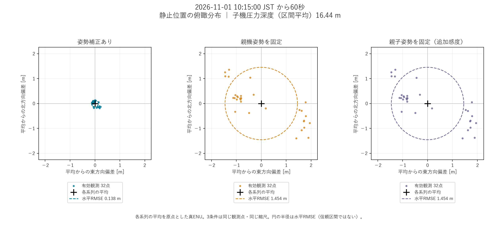

STATIC EVALUATION / 2026.11.01
深度約16 mでの
位置のばらつきを評価。
11月1日10:15からの60秒間で、親機に対する子機の相対位置を評価しました。姿勢補正後の3D RMSEは0.1397 mです。
結果
0.1397 m
姿勢補正後の3D RMSE
親機姿勢固定：1.4545 m → 90.4%減少
指標は、区間平均まわりのばらつきです。
独立した位置真値がないため、絶対精度や真値に対する誤差ではありません。32点の採用観測に対する結果であり、欠測を含む60秒全体や別の条件に一般化しません。
| 条件 | 東 | 北 | 上 | 水平 | 3D |
|---|---|---|---|---|---|
| 姿勢補正あり | 0.0966 | 0.0989 | 0.0195 | 0.1383 | 0.1397 |
| 親機姿勢固定 | 1.2721 | 0.7041 | 0.0388 | 1.4540 | 1.4545 |
| 親子姿勢固定 追加の感度比較 | 1.2721 | 0.7042 | 0.0387 | 1.4540 | 1.4545 |

測定・採用条件
- 実験ID
20261101_nanyo_003／窓day2_101500- 条件
- ユーザー申告の静止区間。開始時刻は10:15。
- 平均深度
- 16.44 m（水圧由来の相対深度、60標本。最小16.433 m、最大16.457 m）
- 採用位置
- 32点。各測距イベントに、75 ms以内の追跡画像を1枚対応付け。重複なし。
- 位置の観測範囲
- 開始14.10秒後〜58.11秒後。最大間隔6.00秒。開始前半の約14秒は測距前で欠測。
- 音響測距
- 有効43/43記録。区間平均まわりRMSE 0.0157 m。音速1500 m/s、時間オフセット0 µs。
- 光源追跡
- 10 Hz、399/600画像が有効（66.5%）。手動再初期化3回。画像の追跡率と位置の採用率は別の指標。
- 座標の意味
- 親機の機体原点から子機の機体原点への相対ベクトルを真ENU（東・北・上）で表現。
深度は収録初期180秒の水面圧代理値、仮定密度1025 kg/m³から求めた未校正の相対深度です。海底深度や音響斜距離ではありません。測距・追跡の成否によらず、60秒区間の有限な未平滑化水圧データを平均し、測距開始前の記録も含めています。
何を比較したか
同じ距離・光点・校正・子機姿勢を使用し、親機の回転だけを10 Hz姿勢の区間平均へ固定して再計算しました。各条件自身の平均まわりでRMSEを算出しています。分母はNで、位置の平滑化・トレンド除去は行っていません。
3D RMSE = √{ (1/N) Σ ‖rᵢ − r̄‖² }
減少率 = (1 − 0.1396644513 / 1.4544686096) × 100 ≈ 90.4%
両機の姿勢を固定した条件は追加の感度比較です。親機のみ固定した比較と区別して掲載しています。
光源追跡・同期・姿勢補正の手法 →分かったことと、残る課題
この静止申告区間の同じ採用点では、親機姿勢を補正すると相対位置のばらつきが減少しました。一方、独立した位置真値がなく、実際の動き、光源同定、時刻同期、磁気・カメラ・取付けの校正誤差を一意に分離できません。
既知の位置・距離・物体寸法での評価、追跡欠測の低減、校正の改善を進めます。マッピングの結果は別レポートにまとめています。この静止RMSEだけから地図の精度を保証することはできません。
水中マップの公開状況 →解析の来歴
既存解析の対象窓から、指標・図・公開用の来歴を選んで掲載しています。元の実験ログや動画はこのサイトに含めていません。
- 元レポート
aquabeacon-analysis/results/20261101_nanyo_003/stationary_spectra/day2_101500/report.md- 解析記録のGit SHA
62034301e45858e2b88aadcb4e271dc5eabd165c- 公開用来歴
- 指標・入力と図のSHA-256（JSON）
解析時のGit SHAに加え、元manifestのコード・設定・校正のハッシュを公開用来歴に保持しています。作業ツリーの変更を含む場合があるため、Git SHAだけで再現性が保証されるとは扱いません。